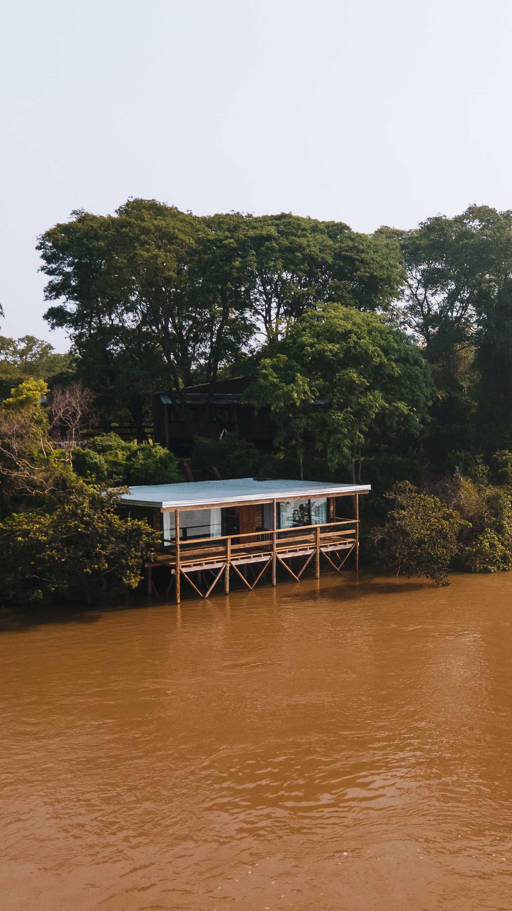

Volver a proyectos
Argentina
Haras San Pablo
Infraestructura residencial y productiva integrada al paisaje rural, con estrategias bioclimáticas para estaciones marcadas.
El masterplan articula vivienda, servicios y espacios de trabajo ecuestre mediante piezas de escala controlada y transiciones semicubiertas.
Se priorizaron materiales locales y sistemas constructivos de mantenimiento eficiente, junto con manejo hídrico de superficie y áreas de sombra vegetada.
Secuencia cartográfica
Del continente al sitio
Secuencia editorial de aproximación territorial: vista continental, foco regional y ubicación final del proyecto.